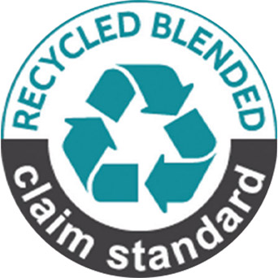
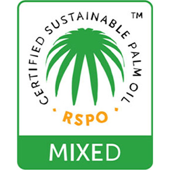
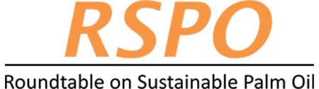

친환경 인증 제품

깨끗한 환경을 위한 애경케미칼의 노력은 계속됩니다
가로로 스크롤 하여 보실 수 있습니다.
| 구분 | RCS 인증 (Recycled Claim Standard) |
RSPO 인증 (Roundtable on Sustainable Palm Oil) |
|---|---|---|
| 표지 |  |  |
| 인증 기준 |
5% 이상의 리사이클 원료를 함유한 제품을 대상으로 재활용 원료 및 이를 활용한 완제품 관리의 연속성을 보장 |
환경을 보호하면서 사회적 수요도 충족시키는 합당한 방식으로 생산되었다고 인증된 팜유를 원료로 사용 |
| 인증 효과 |
재활용 자재 사용을 장려하여 생산 활동으로 인한 환경적 피해를 감소시키고, 업체의 사회적 기준 개선에 기여 |
대규모 팜 농장 개발에 따른 열대우림 파괴와 원주민 및 노동자에 대한 불합리한 보상 이슈를 해소하는 등 환경·노동문제를 개선 |
| 인증 기관 |  | |
| 인증 제품 | 불포화폴리에스테르수지 | 계면활성제 원료 |